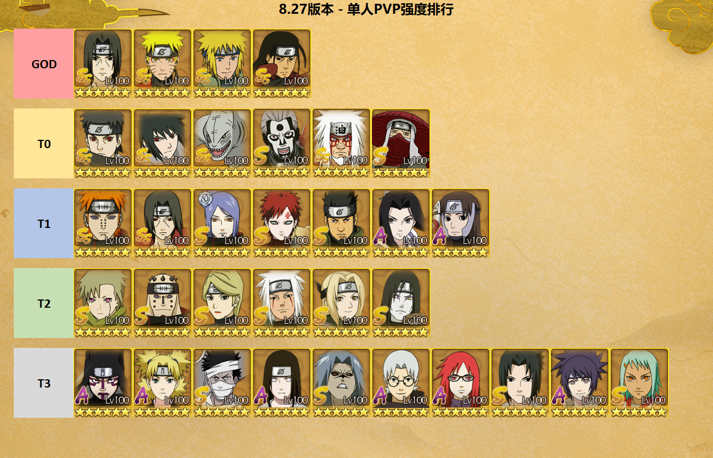
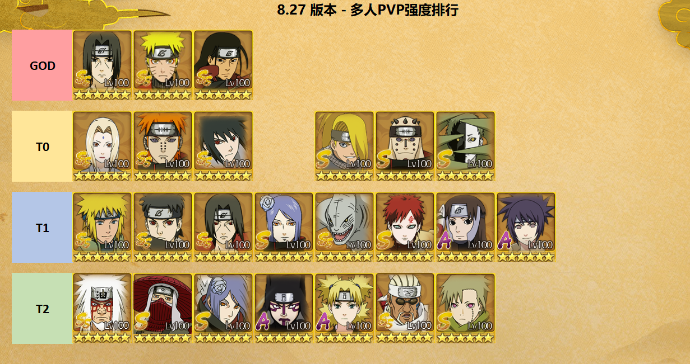
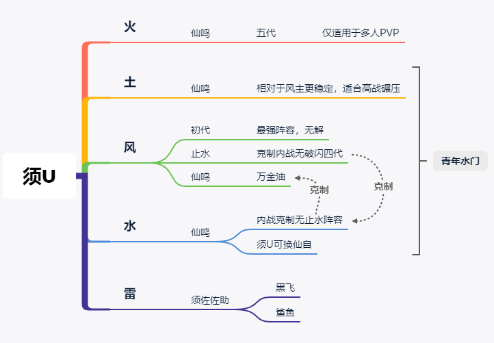
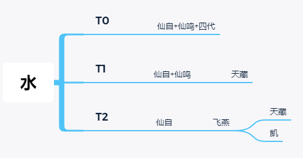
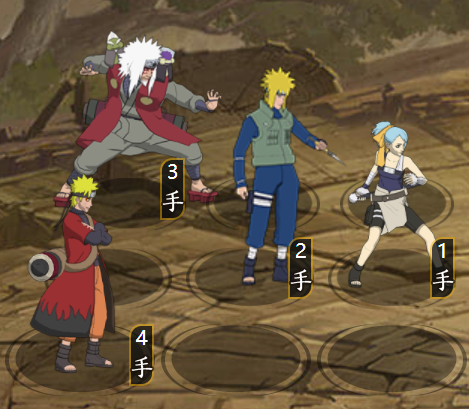
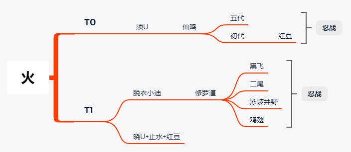
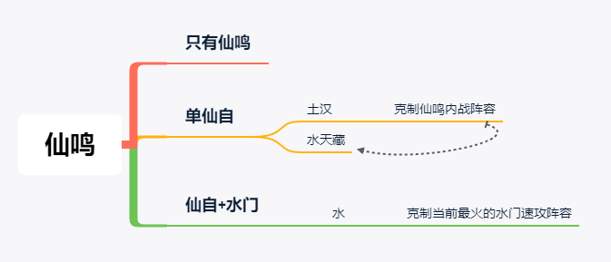

8.27版本PVP阵容排行¶
一、排行标准
GOD：永远滴神
T0：主流阵容
T1：次级阵容及主流阵容替代忍者
T2：新区推荐阵容
T3：新区过渡阵容，不推荐培养
二、本排行仅表示个人观点，欢迎大神提出意见！反正我个人是不满意的，但是不会改。
三、本排行仅适用于8.27版本(青年水门三忍/绝)，后续每个大版本会持续更新。这期会有详细阵容分析，后面慢慢更。
四、往期链接：
【忍者排行】第一期：PVP强度排行 — 适用于兄弟对决版本：https://tieba.baidu.com/p/6712998091
【忍者排行】第二期：PVE强度排行 — 适用于兄弟对决版本：https://tieba.baidu.com/p/6731842951
【忍者排行】第三期：PVP强度排行 — 适用于6.26脱衣小迪版本：https://tieba.baidu.com/p/6792809478


一、版本变更分析¶
1.1 单人PVP：¶
以青年水门为核心构建阵容，就是暴力输出没什么好说的，高战对低战的碾压几乎达到不可能翻盘的地步。以止水为主的混乱队或者水煮队可以勉强抗衡，下面会详细讲；新出的三忍生不逢时，本来是类似于三姐弟的过渡阵容，但是在这个速攻版本下效果不佳；绝的效果有待观察。
1.2 多人PVP：¶
结界忍者焕发第二春，五代纲手的登场率也越来越高。
二、阵容分析¶
Pre 阵容构建原则：¶
先额外说下主流阵容的构建原则，以“强忍”为核心，搭配SS/S忍辅助/补伤；所以无论是白嫖党还是月卡党，尽量不要浪费点卷在非主流的忍者上，忍住卷子攒强忍就完事了，再根据自己当前的强忍选择补阵忍者。 下面以须U为例：

2.2 雷主¶
雷主的优势在于根性+雷强+四刀补伤害，核心强忍是须佐佐助或天道。 由于黑飞鲨鱼都被水门的闪避完克，加上水门螺旋连丸是无属性伤害，导致佐助完全站不住，这个版本不推荐1阵使用，可以考虑时空间2/3阵 须佐兄弟组合推荐黑飞/鲨鱼，单须佐佐推荐鲨鱼 + 任意替补 新区过渡建议使用浪斩白大宁次，不推荐现在搞天道。卷子优先仙鸣其次水门。

2.4 水主¶
这版本水主最大的作用就是靠百豪站前排克制水门阵容，为了肉必须绑定仙自，搭配起来就很简单了 仙鸣+四代；单仙鸣+天藏；飞燕+天藏/凯(仅新区)

补充：无须U的青年水门，推荐水主这套阵容，不建议使用风/土，注意四代先放鸣人后放，让鸣人吃仙自的buff

2.5 火主 把火主放最后单纯是因为他几乎只适用于忍战，忍术支援的吸血+忍强buff完美适合当前版本；自爆阵也是为忍战而生的。 单人PVP不推荐使用火主，只给了一套老牌火强攻阵容

三、总结补充¶
3.1 毕业阵容¶
必备须佐U，在未来的一年内应该都不会变化，建议中、高氪攒钱周年庆出须U； 没有须U的阵容，走以鸣人为主的仙人套或者以佐助为主雷根路线，等新强忍就行。这里提供仙人路线的简单思路，相应的替换忍者还有很多，要根据区内的阵容灵活替换。佐助路线参考2.2雷主章节。

3.2 忍战PVP分析¶
忍战思路很简单，3v3在战力相差不大的时候拼的就是数值。
举个例子，五代纲手单次奶量9体×25%，两次普攻可以造成阵营共计450%的治疗，而青年纲手只能提供共计80%的治疗和40%的护盾，在忍战的表现差异是巨大的。

以下为推荐的忍战忍者。
结界：初代/疾风佐助/红豆/鬼鲛
多体：须U/天道
奶盾：五代/大罗
辅助：仙鸣/天藏/小南/止水
3.2.1. 须U队¶
基本跨服老区都是三个须U互砍，哪边先减员就意味着离输不远了，核心还是靠火主的忍术支援回血或者土主的开局盾保证安全，这里提供两套推荐阵容，最理想的还是1结界+2奶的队伍：
奶阵：火/土 + 须U + 五代 + 仙鸣
结界：火/土 + 须U + 初代 + 补位(仙鸣/须佐佐助/水门)
3.2.3. 仙人队¶
新区没须U没天道的玩家还是非常多的，没有核心多体输出，思路就是肉+奶+养成鸣人/保住水门
推荐：土/水主 + 仙自 + 仙鸣 + 五代
这里五代纲手和仙自可用青年水门/天藏/止水等部位
3.2.4 自爆队¶
这套阵容非常适合中低战(相对)的平民，面对着3个须U，上面的仙人队简直是在刮痧+当靶子。这时自爆在战力差距不大且对面没奶的情况至少可以炸掉30%甚至更高的血量，给后续的队友铺路，强力推荐！
阵容火主+脱衣小迪+修罗道+替补
3、克制与反克制¶
4、新人培养¶
TBD
封印强忍优先级：仙鸣>水门>仙自>天道 钥匙强忍优先级：须佐佐助>止水=晓U 必备忍者：汉；三姐弟； 当前版本入坑路线：开局风+三姐弟=>前期雷浪斩+火修罗+风三尾=>中期 青年三忍(贵！不推荐)=>仙鸣构建土仙人组合/佐助构建雷根组合 除强忍/通行证和必备PVE忍者外，其余忍者均不推荐培养。